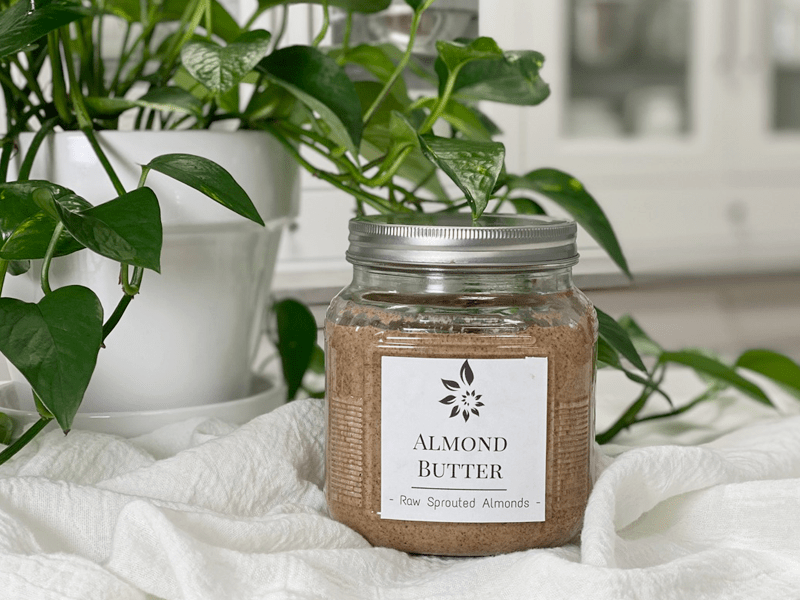
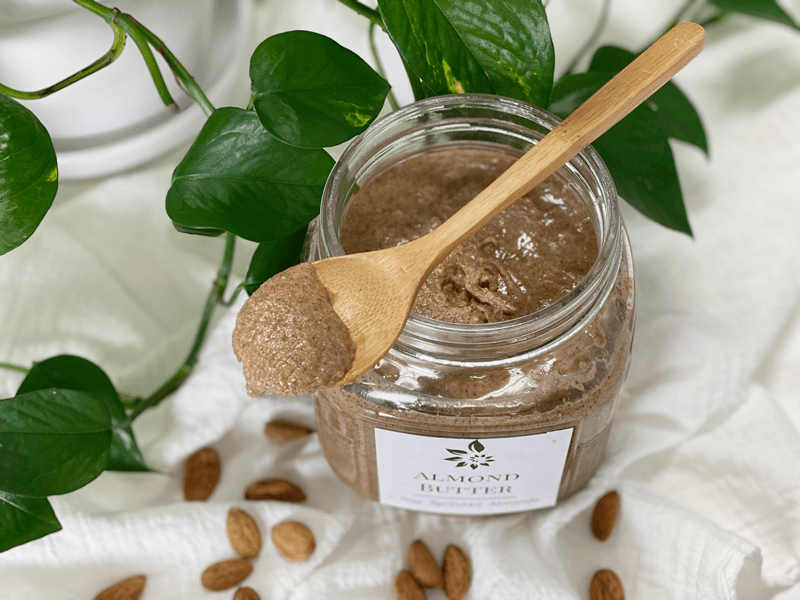

Almond Butter
Almond Butter
There is never a dull moment in the Nouveau Raw Kitchens, and today didn’t let me down. I have been meaning to a do a post on how to make your own nut butter for some time now (several years actually), but I just never got around to it. I wanted to provide a stack of photos so you could watch the progress as whole nuts turn into butter. So today, I finally did it.

Setting up for the photoshoot proved to be interesting. I only have my iPhone for taking pictures, and thank goodness my girlfriend Ruthie gave me a special holder that attaches the iPhone to a tripod. Boy, don’t I feel all “uptown.” hehe With the food processor in place, the almonds soaked and dehydrated… I was ready. Small snafu… the tripod was too short, and I couldn’t get a shot looking down into the machine.
So, I shortened the tripod and placed it on the counter. Next snafu… Now I was too short to see the “camera” screen to take the pictures, so I had to break out the ladder. Yeah, it was beginning to look pretty darn comical around here. With everything in place and the camera angled perfectly, I took my first picture. The battery went dead. Lol ok, I fixed that, and we now had endless power surging through the iPhone.
I turned the food processor on, set the timer for 2 minutes, and things were well on their way. What’s that I hear? My camera iPhone is ringing?!! I climbed the ladder, got on the counter, and looked at the screen of the phone. I was, the bank… the bank? Oh gosh, I have to take this call. I slid the bar over which answered the call, and I switched it to the speaker. “Hello,”… It was Tracy from the bank…. “Oh, dear Tracy, can I ask you to hold on for a second?”

I climbed off the counter and down the ladder, turned off the food processor (which had to be ringing in her ears haha), ran over to the timer, and paused it. I scampered back over to the counter and climbed back up to take the call. I am sure she couldn’t understand why I was giggling, making grunting noises from climbing all over the counter and so forth. After hanging up, I turned my phone back into my camera and continued with the project.
I stopped the food processor every two minutes and removed the top so I could take a picture. You might be hard-pressed to see a difference between some of the photos, but after all that work, I was bound and determined to bring you along on my adventure of making almond butter. :) It took 26 minutes to turn 2 cups of almonds into 1 1/4 cups of almond butter. Keep in mind that this will vary depending on your food processor. So don’t be shocked if it takes more or less time for you to make.
My example is just a template. I learned many other things during this process… all events listed took place in two-minute intervals. I can guzzle 16 oz of water; I can run through the house like a madwoman taking dirty clothes from the hamper and into the washing machine. I can use the restroom, I can sing the “American Anthem” ok, maybe hum most of it in under two minutes, I can use the bathroom, I can do 246 jumping jacks on the mini trampoline, I can wash a sink full of dishes, and once again use the restroom (darn that 16 oz bottle of water) and I can trip over the trash bag on the floor, snagging my big toe on it, thus dragging it as I half stumble through the kitchen, only to find that I left a trail of garbage all over the floor. So, making nut butter can teach you more than you can imagine! lol
5/22/15 I updated this recipe today. I mentioned below that every food processor will vary in the time that it takes to make nut butter. Back in 2013, when I made this recipe, I was using a Cuisinart processor, and it took 26 minutes. Today, I am using a Breville Sous Chef processor, and it took 12 minutes.
 Ingredients:
Ingredients:
Yields 2 cups
Preparation:
- Make sure that you followed the process for soaking and dehydrating the almonds. DO NOT use wet almonds for this; it won’t work.
- Place the almonds and salt in the food processor, fitted with the “S” blade.
- After 1 minute, I stopped the machine and added the coconut oil. It doesn’t need to be melted first. Proceed
- Stop the machine periodically to scrape down the sides of the bowl, just to keep everything blending evenly.
- Every machine works differently, so that processing time will always vary. It depends on the strength and size of your food processor and how many nuts you are processing.
- My machine took 12 minutes, which gave me the perfect consistency.
- Be patient. Remember, the nuts will go from mealy to powdery, to clumpy, to a large ball of dough, before it hits that velvety stage, so be patient.
- No matter how tempting it is, NEVER add water to your nut butter, it will produce a pasty, gritty result and it will spoil quicker.
- I store my butters in the fridge to extend the shelf life and to avoid the nuts from going rancid.
- When stored in the fridge, the butters will become much thicker. If you have the time, you can allow it to warm to room temp to help soften it.
- Store excess butter in the freezer. Pour the butter into candy molds or ice cube trays. After they are frozen, remove and store in an airtight, freezer-safe container for approximately 4 months. Enjoy right out of the freezer for a mid-afternoon snack.
- This mild, sweet butter is adaptable in sweet and savory dishes.
Sous Chef Suggestions:
- Only make nut butters in high-powered blenders or food processors. Please take caution that you don’t overheat whatever appliance you choose to use.
- If you are concerned about the nut butter getting too warm through the process, you can monitor it with a thermometer gun.
- Freezing the nuts before making the nut butter can help keep the almonds cooler when you start the process.
- If the machine starts to get too warm, turn it off and let it cool before proceeding.
- Want a blonde color almond butter or one that might be easier to digest? Remove the skins before starting the nut butter process.
- There is no right or wrong texture when it comes to making nut/seed butters. The beauty of making it yourself allows you to make it as chunky as you want it or as smooth and liquidy as you wish. I have a powerful processor, and at 12 minutes, it poured from the container to the jar. Nut butters always firm up once placed in the fridge, so this turned out spot on.
© AmieSue.com